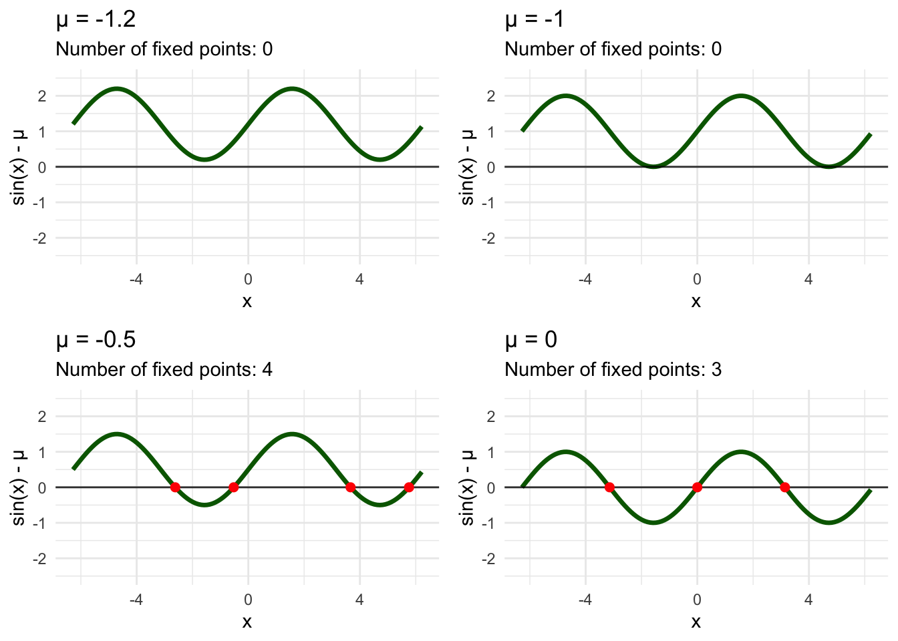
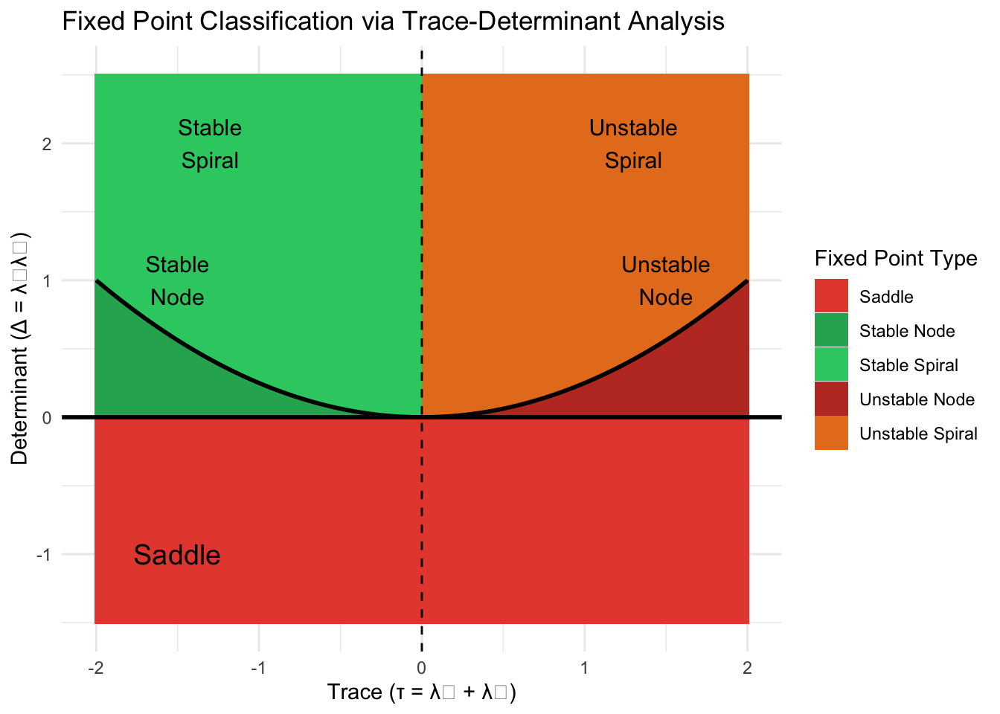
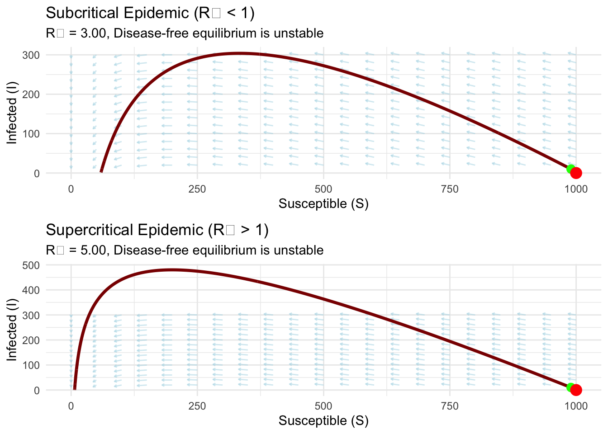
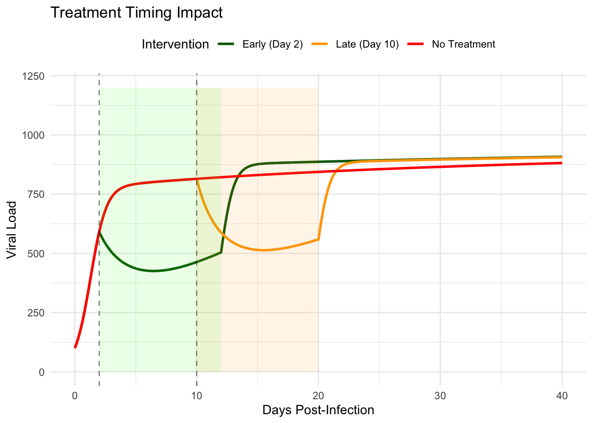

Chapter 9 Spirals, Cycles, and Chaos: Complex Behaviors in 2D Systems
The electrocardiogram trace on the hospital monitor shows a rhythmic pattern—regular peaks and valleys marking each heartbeat with metronomic precision. Yet this apparent regularity masks profound complexity. The heart’s electrical system represents a coupled dynamical system where pacemaker cells, conducting pathways, and muscle tissue interact through nonlinear feedback. When this delicate balance fails, the heart can transition from stable rhythm to dangerous oscillations, from coordinated contraction to chaotic fibrillation. Understanding these transitions—from stability to oscillation, from order to chaos—requires examining the deepest structures of two-dimensional dynamical systems.
Our previous exploration revealed how coupled differential equations create phase portraits with fixed points, trajectories, and basins of attraction. Now we venture into the behaviors that make two-dimensional systems truly remarkable: self-sustained oscillations that emerge from instability, limit cycles that organize periodic behavior, and the boundary between order and chaos. While true chaos cannot exist in two-dimensional continuous systems, examining this boundary illuminates the mechanisms that generate complex dynamics in higher dimensions.
9.1 The Poincaré-Bendixson Theorem and the Topology of Two Dimensions
Consider a trajectory wandering through the two-dimensional phase plane, bounded within some finite region yet never settling to a fixed point. Where can it go? Intuition suggests many possibilities—perhaps intricate wandering patterns, aperiodic meanderings, or unpredictable jumps. The Poincaré-Bendixson theorem delivers a stunning constraint: any such trajectory must eventually approach a periodic orbit.
This theorem represents one of the most profound results in dynamical systems theory. For a two-dimensional continuous-time system, suppose a trajectory remains bounded and doesn’t approach any fixed point. Then the trajectory must either be a closed orbit itself or approach a closed orbit as time goes to infinity. This eliminates an enormous space of potential behaviors—bounded trajectories in two dimensions cannot exhibit chaos, cannot wander aperiodically, cannot display sensitive dependence on initial conditions.
The proof relies on fundamental topological properties of the plane. Trajectories cannot cross themselves or each other, creating rigid constraints on possible motions. In three or more dimensions, these constraints vanish—trajectories can weave around each other in complex patterns, enabling the strange attractors and chaotic dynamics impossible in two dimensions.
For systems modeling biological oscillators, the Poincaré-Bendixson theorem provides crucial insight. If a model exhibits sustained bounded oscillations that don’t settle to fixed points, we know these oscillations must be periodic—either exactly periodic closed orbits or trajectories spiraling toward such orbits. This guides our analysis toward understanding limit cycles, their stability, and the bifurcations that create or destroy them.
9.2 Limit Cycles: Self-Sustained Oscillations
Unlike the neutral cycles of conservative systems where amplitude depends on initial conditions, limit cycles represent isolated periodic orbits that attract nearby trajectories. They emerge through nonlinear mechanisms that balance destabilizing and stabilizing effects, creating oscillations with fixed amplitude and period determined by system parameters rather than initial conditions.
The distinction proves crucial for biological systems. The heart cannot function with neutral cycles—slight perturbations would permanently alter beat amplitude and timing. Instead, cardiac oscillations arise from limit cycles where feedback mechanisms restore the system to its natural rhythm after disturbances. This structural stability ensures reliable function despite continuous environmental fluctuations.
Consider a simplified model of cardiac oscillation using the FitzHugh-Nagumo equations, originally developed to capture neural excitability but equally applicable to cardiac dynamics:
\[\frac{dV}{dt} = c\left(V - \frac{V^3}{3} + R\right)\]
\[\frac{dR}{dt} = -\frac{1}{c}(V - a + bR)\]
Here \(V\) represents the membrane potential (analogous to voltage in ECG measurements), \(R\) models recovery variables encompassing ion channel dynamics, and the parameters control excitability and oscillation characteristics. The cubic nonlinearity in the first equation creates the essential feedback: at moderate voltages, the system amplifies deviations (positive feedback), while at extreme voltages, it suppresses further increases (negative feedback).
# Load required libraries
library(ggplot2)
library(deSolve)
# ------------------------------------------------------------
# FitzHugh–Nagumo Model (canonical nondimensional form)
# ------------------------------------------------------------
fitzhugh_nagumo <- function(t, state, parameters) {
V <- state["V"]
R <- state["R"]
c_param <- parameters[["c"]]
a <- parameters[["a"]]
b <- parameters[["b"]]
dV <- V - V^3/3 - R
dR <- (V + a - b*R) / c_param
list(c(dV, dR))
}
# Parameters generating a stable limit cycle
fn_params <- list(c = 3, a = 0.7, b = 0.8)
# ------------------------------------------------------------
# Vector field grid
# ------------------------------------------------------------
V_range <- seq(-2.5, 2.5, by = 0.15)
R_range <- seq(-2, 2, by = 0.12)
vector_field <- expand.grid(V = V_range, R = R_range)
# Compute derivatives
vector_field$dV <- with(vector_field, V - V^3/3 - R)
vector_field$dR <- with(vector_field, (V + fn_params$a - fn_params$b*R) / fn_params$c)
# Normalize vectors for visualization
mag <- sqrt(vector_field$dV^2 + vector_field$dR^2)
scale_factor <- 0.1
vector_field$dV_norm <- scale_factor * vector_field$dV / mag
vector_field$dR_norm <- scale_factor * vector_field$dR / mag
# Subsample vector field for readability
vf_sub <- vector_field[seq(1, nrow(vector_field), by = 4), ]
# ------------------------------------------------------------
# Integrate one example trajectory
# ------------------------------------------------------------
times <- seq(0, 30, by = 0.01)
initial_state <- c(V = 0.5, R = 0)
trajectory <- ode(y = initial_state, times = times,
func = fitzhugh_nagumo, parms = fn_params)
trajectory_df <- as.data.frame(trajectory)
# ------------------------------------------------------------
# Phase portrait
# ------------------------------------------------------------
phase_portrait <- ggplot() +
geom_segment(
data = vf_sub,
aes(x = V, y = R, xend = V + dV_norm, yend = R + dR_norm),
arrow = arrow(length = unit(0.02, "inches")),
color = "lightblue", alpha = 0.6
) +
geom_path(
data = trajectory_df,
aes(x = V, y = R),
color = "darkred", linewidth = 1.2, alpha = 0.9
) +
geom_point(
data = trajectory_df[1,],
aes(x = V, y = R),
color = "green", size = 3
) +
geom_point(
data = tail(trajectory_df, 1),
aes(x = V, y = R),
color = "blue", size = 3
) +
labs(
title = "FitzHugh–Nagumo Oscillator: Phase Portrait",
subtitle = "Trajectory converges to a stable limit cycle",
x = "Membrane Potential V",
y = "Recovery Variable R"
) +
theme_minimal() +
coord_equal(xlim = c(-2.5, 2.5), ylim = c(-2, 2))
# ------------------------------------------------------------
# Time-series plot
# ------------------------------------------------------------
timeseries_plot <- ggplot(trajectory_df, aes(x = time)) +
geom_line(aes(y = V), color = "darkred", linewidth = 1) +
labs(
title = "FitzHugh–Nagumo Time Series",
subtitle = "Self-sustained oscillations in membrane potential",
x = "Time",
y = "V(t)"
) +
theme_minimal() +
theme(panel.grid.minor = element_blank())
# Render
print(phase_portrait)

The phase portrait reveals the limit cycle’s geometric structure. Trajectories starting near the unstable fixed point spiral outward as instability dominates. Trajectories starting far from the fixed point spiral inward as the cubic term’s damping effect prevails. Both converge to the same closed orbit—the limit cycle—where amplification and damping balance perfectly.
The corresponding time series displays the characteristic shape of cardiac action potentials: rapid upstroke (depolarization), plateau phase, and gradual recovery. This pattern emerges not from external forcing but from the system’s internal dynamics, illustrating how limit cycles generate autonomous rhythms.
9.3 Stability of Limit Cycles and Floquet Theory
Determining whether a periodic orbit attracts or repels nearby trajectories requires analyzing perturbations in directions transverse to the flow. Floquet theory provides the mathematical framework. Consider a small perturbation \(\delta(t)\) from the periodic orbit \(\mathbf{x}_0(t)\) with period \(T\). The linearized dynamics satisfy:
\[\frac{d\delta}{dt} = \mathbf{J}(\mathbf{x}_0(t))\delta\]
where \(\mathbf{J}\) is the Jacobian matrix evaluated along the periodic orbit. This linear equation with periodic coefficients admits solutions of the form \(\delta(t) = e^{\mu t}\mathbf{p}(t)\) where \(\mathbf{p}(t)\) is periodic with period \(T\). The Floquet exponents \(\mu\) determine stability: if all exponents (except the trivial zero exponent corresponding to perturbations along the orbit) have negative real parts, the limit cycle is stable.
For limit cycles in two-dimensional systems, one Floquet exponent is always zero (perturbations along the orbit neither grow nor decay), leaving one non-trivial exponent. If this exponent is negative, the limit cycle attracts nearby trajectories; if positive, it repels them. Computing Floquet exponents generally requires numerical integration around the entire periodic orbit, though special cases admit analytical treatment.
9.4 Hopf Bifurcations: The Birth of Oscillations
One of the most important mechanisms creating limit cycles is the Hopf bifurcation, where a fixed point loses stability and spawns a periodic orbit as parameters vary. This bifurcation explains transitions between steady states and oscillatory behavior throughout science—from chemical reactions that suddenly begin oscillating as concentrations change, to ecosystems shifting from stable equilibrium to population cycles, to cardiac systems transitioning from normal rhythm to abnormal oscillations.
Consider how parameter changes in the FitzHugh-Nagumo model affect dynamics. At certain parameter values, the fixed point is stable—all trajectories spiral inward to rest. As we vary the parameter \(a\) (representing external current or stimulus), the fixed point’s stability can change. At the critical value where eigenvalues become purely imaginary, a Hopf bifurcation occurs, and a limit cycle emerges.
In a supercritical Hopf bifurcation, the limit cycle appears continuously as the parameter crosses the critical value, with small amplitude near the bifurcation point growing smoothly as parameters move further from criticality. This represents a “soft” transition to oscillation. In a subcritical Hopf bifurcation, an unstable limit cycle exists before the bifurcation, and the transition to stable oscillation occurs discontinuously—a “hard” transition that can lead to sudden large-amplitude oscillations.
library(deSolve)
library(ggplot2)
# --- FitzHugh–Nagumo system (example; replace with yours if already defined) ---
fitzhugh_nagumo <- function(t, state, parms) {
with(as.list(c(state, parms)), {
dV <- V - (V^3)/3 - R + a
dR <- (V + b - c * R) / tau
list(c(dV, dR))
})
}
# --- Example parameters (replace with your own fn_params if defined elsewhere) ---
fn_params <- list(a = 0.5, b = 0.8, c = 0.7, tau = 12)
# --- Hopf Bifurcation Sweep ---
a_values <- seq(0.3, 1.0, by = 0.05)
max_amplitudes <- numeric(length(a_values))
for (i in seq_along(a_values)) {
params_temp <- fn_params
params_temp$a <- a_values[i]
# Long integration to reach attractor
times_long <- seq(0, 50, by = 0.05)
traj_temp <- ode(
y = c(V = 0.5, R = 0),
times = times_long,
func = fitzhugh_nagumo,
parms = params_temp,
method = "lsoda",
atol = 1e-8,
rtol = 1e-8
)
traj_temp <- as.data.frame(traj_temp)
# Extract last segment safely
seg_len <- min(200, nrow(traj_temp))
last_segment <- tail(traj_temp, seg_len)
# Compute amplitude of V
max_amplitudes[i] <- max(last_segment$V) - min(last_segment$V)
}
# --- Build bifurcation diagram ---
bifurcation_diagram <- data.frame(a = a_values, amplitude = max_amplitudes)
bifurcation_plot <- ggplot(bifurcation_diagram, aes(x = a, y = amplitude)) +
geom_line(color = "darkblue", linewidth = 1.2) +
geom_point(color = "darkred", size = 2) +
geom_vline(xintercept = 0.65, linetype = "dashed", color = "red", alpha = 0.7) +
annotate("text", x = 0.5, y = max(max_amplitudes) * 0.9,
label = "Stable\nFixed Point", size = 4) +
annotate("text", x = 0.85, y = max(max_amplitudes) * 0.9,
label = "Limit Cycle\nOscillations", size = 4) +
labs(
title = "Hopf Bifurcation in Cardiac Model",
x = "Parameter a (stimulus strength)",
y = "Oscillation Amplitude",
subtitle = "Transition from steady state to rhythmic beating"
) +
theme_minimal()
print(bifurcation_plot)
This bifurcation diagram reveals how the system transitions from quiescence to oscillation. At low stimulus values (small \(a\)), the system remains at a stable fixed point representing cardiac rest. As stimulus increases past the critical value, oscillations emerge—the heart begins to beat. The amplitude grows smoothly with further parameter increase, characteristic of supercritical Hopf bifurcation.
Understanding Hopf bifurcations proves crucial for clinical applications. Cardiac arrhythmias often arise when parameters (ion channel properties, autonomic tone, metabolic state) push the system through bifurcations. Interventions aim to shift parameters back across bifurcation boundaries, restoring normal rhythm.
9.5 Multiple Time Scales and Relaxation Oscillations
Many biological oscillators exhibit dynamics on widely separated time scales, creating relaxation oscillations characterized by alternating slow and fast phases. The cardiac action potential demonstrates this clearly: rapid depolarization occurs on millisecond time scales, while recovery unfolds over hundreds of milliseconds.
The FitzHugh-Nagumo model captures this through the parameter \(c\), which controls the time scale separation between the fast voltage variable \(V\) and the slow recovery variable \(R\). When \(c\) is large, the system exhibits rapid voltage changes interspersed with slow recovery periods, producing the characteristic relaxation oscillation shape.
Analyzing relaxation oscillations often employs singular perturbation theory, treating the system as alternating between fast dynamics (where slow variables remain essentially constant) and slow dynamics (where fast variables quickly equilibrate). This decomposition transforms complex two-dimensional dynamics into a sequence of one-dimensional problems, providing geometric insight into oscillation mechanisms.
The slow manifold—the curve in phase space where fast dynamics equilibrate—organizes relaxation oscillations. Trajectories rapidly approach this manifold (fast phase), then slowly evolve along it (slow phase), periodically jumping to different manifold branches when reaching fold points. Understanding this geometry illuminates how oscillation amplitude and frequency depend on system parameters.
9.6 Disease States as Dynamical Transitions
Cardiac pathologies often manifest as transitions between different dynamical regimes. Atrial fibrillation, the most common cardiac arrhythmia, represents a transition from organized periodic dynamics to high-frequency irregular activity. While the full complexity requires three-dimensional or higher models, two-dimensional systems reveal the underlying mechanisms.
Consider a modified FitzHugh-Nagumo model incorporating refractory period dynamics—the time after excitation during which tissue cannot immediately re-excite:
\[\frac{dV}{dt} = c(V - \frac{V^3}{3} + R) - I_{block}(V, T_{refract})\]
\[\frac{dR}{dt} = -\frac{1}{c}(V - a + bR)\]
The term \(I_{block}\) models refractoriness, preventing immediate re-excitation. When refractory periods shorten (due to disease, drugs, or metabolic changes), the system can undergo bifurcations creating rapid oscillations or irregular dynamics.
# Required packages
library(deSolve)
library(ggplot2)
# Baseline FitzHugh–Nagumo parameters
fn_params <- list(
a = 0.7,
b = 0.8,
c = 3
)
# Modified model with refractory dynamics -------------------------------------
fitzhugh_refractory <- function(t, state, parameters) {
with(as.list(c(state, parameters)), {
# Refractory blocking current (example thresholding)
I_block <- ifelse(V > 0.5 & R < -0.3, block_strength * V, 0)
# FitzHugh–Nagumo dynamics with blockage
dV <- c * (V - V^3/3 + R) - I_block
dR <- -(V - a + b*R) / c
list(c(dV, dR))
})
}
# Parameters for normal and impaired refractory behavior -----------------------
normal_params <- modifyList(fn_params, list(block_strength = 0.30))
disease_params <- modifyList(fn_params, list(block_strength = 0.05))
# Simulation settings ----------------------------------------------------------
times_compare <- seq(0, 40, by = 0.01)
initial_state <- c(V = 0.5, R = 0)
# Solve ODEs -------------------------------------------------------------------
traj_normal <- ode(
y = initial_state,
times = times_compare,
func = fitzhugh_refractory,
parms = normal_params
)
traj_disease <- ode(
y = initial_state,
times = times_compare,
func = fitzhugh_refractory,
parms = disease_params
)
traj_normal_df <- as.data.frame(traj_normal)
traj_disease_df <- as.data.frame(traj_disease)
# Plot comparison --------------------------------------------------------------
compare_plot <- ggplot() +
geom_line(data = traj_normal_df,
aes(x = time, y = V, color = "Normal"),
size = 0.8, alpha = 0.7) +
geom_line(data = traj_disease_df,
aes(x = time, y = V, color = "Disease"),
size = 0.8, alpha = 0.7) +
scale_color_manual(values = c(
"Normal" = "darkgreen",
"Disease" = "darkred"
)) +
labs(
title = "Cardiac Dynamics: Normal vs. Disease State",
subtitle = "Shortened refractoriness leads to rapid irregular activity",
x = "Time",
y = "Voltage (V)",
color = "State"
) +
theme_minimal() +
theme(legend.position = "top")
print(compare_plot)
The comparison reveals how parameter changes representing pathological states alter oscillation patterns. Normal parameters produce regular, widely-spaced beats with appropriate refractory periods. Disease parameters generate rapid, irregular oscillations as shortened refractoriness allows premature re-excitation.
This framework guides therapeutic strategies. Anti-arrhythmic drugs often work by shifting bifurcation parameters, lengthening refractory periods or modifying excitability to restore stable rhythmic dynamics. Understanding the dynamical mechanisms enables rational drug design and optimal dosing.
9.7 Sensitive Dependence and the Seeds of Chaos
While two-dimensional continuous systems cannot exhibit chaos, they can display sensitive dependence on initial conditions near certain structures. Consider trajectories near a saddle point—nearby trajectories diverge exponentially along the unstable manifold while converging along the stable manifold. This creates effective unpredictability: small measurement errors in initial conditions lead to large differences in subsequent behavior.
The Lyapunov exponent quantifies this sensitivity, measuring the average exponential rate of trajectory separation:
\[\lambda = \lim_{t \to \infty} \frac{1}{t} \ln \frac{|\delta(t)|}{|\delta(0)|}\]
where \(\delta(t)\) represents the separation between initially nearby trajectories. Positive Lyapunov exponents indicate exponential divergence (sensitivity), while negative exponents indicate convergence. For two-dimensional systems, the sum of Lyapunov exponents equals the trace of the Jacobian matrix averaged along the trajectory, constraining possible dynamics.
True chaos requires at least one positive Lyapunov exponent, at least one zero exponent (along the flow direction), and system volume contraction (sum of exponents negative). Two-dimensional systems can achieve at most one positive exponent at isolated locations (near saddles), insufficient for sustained chaotic behavior.
# Load libraries
if (!require("deSolve")) install.packages("deSolve")
if (!require("ggplot2")) install.packages("ggplot2")
library(deSolve)
library(ggplot2)
# Parameters
fn_params <- list(a = 0.7, b = 0.8, c = 3.0)
# FitzHugh-Nagumo ODE system
fitzhugh_nagumo <- function(t, y, parms) {
with(as.list(c(y, parms)), {
dV <- c * (V - V^3 / 3 + R)
dR <- -(V - a + b * R) / c
list(c(dV, dR))
})
}
# Find fixed point numerically (robust)
find_fixed_point <- function(p) {
f <- function(V) {
R <- V^3/3 - V
V - p$a + p$b * R
}
V_fp <- uniroot(f, c(-2, 2))$root
R_fp <- V_fp^3/3 - V_fp
c(V = V_fp, R = R_fp)
}
fp <- find_fixed_point(fn_params)
# Jacobian
jacobian_fn <- function(V, R, params) {
with(params, {
matrix(c(
c * (1 - V^2), c,
-1/c, -b/c
), nrow = 2, byrow = TRUE)
})
}
J <- jacobian_fn(fp[1], fp[2], fn_params)
eigenvals <- eigen(J)$values
lyap <- Re(eigenvals)
cat("Fixed point: V =", fp[1], ", R =", fp[2], "\n")## Fixed point: V = 1.199408 , R = -0.6242602## Lyapunov exponents: -0.7912014 -0.7912014# Simulate nearby trajectories
times <- seq(0, 10, by = 0.01)
y0_plus <- c(fp[1] + 0.01, fp[2])
y0_minus <- c(fp[1] - 0.01, fp[2])
# Run ODEs
out1 <- ode(y = y0_plus, times = times, func = fitzhugh_nagumo, parms = fn_params)
out2 <- ode(y = y0_minus, times = times, func = fitzhugh_nagumo, parms = fn_params)
# 🔑 CRITICAL FIX: ode() may return a matrix with columns "time", "1", "2"
# So we CONVERT TO DATA FRAME and SET COLUMN NAMES EXPLICITLY
traj1_df <- as.data.frame(out1)
traj2_df <- as.data.frame(out2)
# Force correct column names
names(traj1_df) <- c("time", "V", "R")
names(traj2_df) <- c("time", "V", "R")
# Now compute separation — V and R are guaranteed to exist
separation <- sqrt((traj1_df$V - traj2_df$V)^2 + (traj1_df$R - traj2_df$R)^2)
separation_df <- data.frame(time = traj1_df$time, separation = separation)
# Remove non-positive separations (log(0) = -Inf)
separation_df <- separation_df[separation_df$separation > 0, ]
# Plot
ggplot(separation_df, aes(x = time, y = log(separation))) +
geom_line(color = "darkblue") +
geom_smooth(method = "lm", se = FALSE, color = "red", linetype = "dashed") +
labs(
title = "Trajectory Divergence Near Saddle Point",
x = "Time",
y = "Log(Separation)"
) +
theme_minimal()## `geom_smooth()` using formula = 'y ~ x'
The logarithmic plot of trajectory separation reveals exponential divergence near the unstable fixed point. The slope of this plot estimates the local Lyapunov exponent, quantifying sensitivity to initial conditions. However, this sensitivity remains localized—trajectories eventually spiral toward the limit cycle where convergence dominates.
This demonstrates a crucial distinction between local sensitivity and global chaos. Two-dimensional systems can exhibit transient sensitivity near saddle points or unstable cycles, but bounded trajectories ultimately converge to attractors where sensitivity vanishes. True chaos requires sustained sensitivity, impossible in two dimensions.
9.8 The Boundary Between Order and Chaos
As we approach the limits of two-dimensional dynamics, we encounter phenomena hinting at higher-dimensional complexity. Homoclinic orbits—trajectories that leave and return to the same saddle point—create intricate phase space structures. When parameters vary, these orbits can undergo homoclinic bifurcations, spawning complex dynamics including saddle-node bifurcations of periodic orbits and the sudden appearance or disappearance of limit cycles.
Systems exhibiting homoclinic tangencies (where stable and unstable manifolds touch tangentially) display particularly rich behavior. Small parameter changes can create infinite cascades of period-doubling bifurcations—each periodic orbit splitting into two as parameters vary. While individual systems remain non-chaotic, the bifurcation sequence converges to what would be a chaotic attractor in the three-dimensional version of the system.
These structures provide crucial preparation for understanding chaos in higher dimensions. The geometric concepts—stable and unstable manifolds, homoclinic connections, bifurcation cascades—extend directly to three-dimensional systems where they generate strange attractors and sustained chaotic dynamics.
9.9 Clinical Implications and Therapeutic Interventions
Understanding cardiac dynamics as a two-dimensional system informs clinical practice in profound ways. Heart rate variability analysis examines the time series of inter-beat intervals, revealing signatures of underlying dynamical changes. Healthy hearts show complex variability reflecting autonomic nervous system modulation and adaptive responses. Reduced variability often precedes adverse events, suggesting the system has moved toward a less flexible dynamical regime.
Cardiac pacing represents direct dynamical intervention. By delivering periodic electrical stimuli, pacemakers inject external forcing into the cardiac system. Analyzing the forced system requires understanding how external periodic inputs interact with intrinsic dynamics—potentially creating resonances, entrainment to forcing frequency, or complex quasi-periodic responses.
Modern defibrillation strategies increasingly incorporate dynamical systems concepts. Rather than delivering massive shocks that reset all tissue simultaneously, newer approaches use low-energy perturbations timed to exploit system dynamics, pushing the system across basin boundaries toward normal rhythm with minimal energy.
The field of cardiac chaos control develops from these insights. When cardiac tissue exhibits chaotic or near-chaotic dynamics, small well-timed perturbations can stabilize desired periodic orbits, restoring regular rhythm. This represents dynamical therapy—using understanding of system structure to guide minimal interventions maximizing therapeutic effect.
9.10 Beyond Two Dimensions: The Gateway to Chaos
Our exploration of two-dimensional systems reveals both their richness and their limitations. We have encountered limit cycles creating self-sustained oscillations, Hopf bifurcations generating rhythms from steady states, relaxation oscillations with multiple time scales, and sensitive dependence near unstable structures. Yet the Poincaré-Bendixson theorem constrains us—true chaos remains forbidden.
This limitation disappears in three dimensions, where the topological constraints vanish. Trajectories can weave around each other without crossing, stable and unstable manifolds can intersect transversely creating homoclinic tangles, and strange attractors with fractal structure emerge. The concepts developed in two dimensions—phase space geometry, stability analysis, bifurcation theory, Lyapunov exponents—provide the essential foundation for understanding these higher-dimensional phenomena.
The cardiac system, in reality, involves far more than two variables. Spatial extent, multiple ionic currents, autonomic modulation, and mechanical coupling create high-dimensional dynamics where chaos becomes possible. The two-dimensional models serve as conceptual frameworks, isolating essential mechanisms while acknowledging that full complexity requires higher-dimensional analysis.
As we prepare to venture into three dimensions and beyond, we carry with us the geometric intuition developed here—the ability to read phase portraits, understand how stability changes create new behaviors, recognize the signatures of different attractors, and appreciate how simple rules generate complex patterns. The two-dimensional phase plane has been our training ground, preparing us for the even more exotic and beautiful structures that await in the full richness of nonlinear dynamics.
The journey from fixed points to limit cycles to the edge of chaos reveals a profound truth: complexity emerges not from complicated equations but from nonlinear feedback between simple elements. Two coupled variables, properly connected, generate rhythms, transitions, and the seeds of unpredictability. This principle extends throughout nature—from molecules to cells to organisms to ecosystems—wherever feedback creates the dynamic patterns underlying life itself.